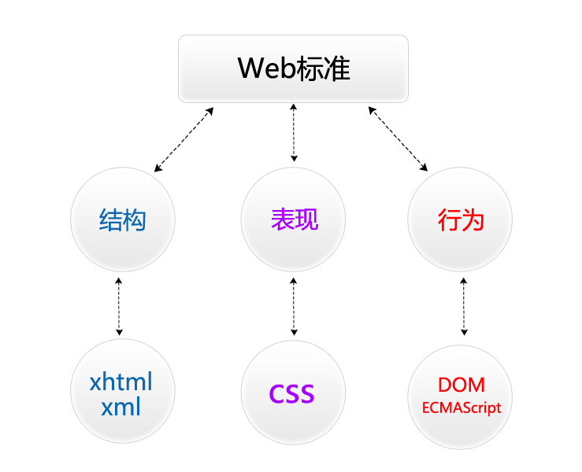

网页制作技术
1、 XHTML+CSS 标记语言
一、 WEB标准的概念及组成

W3C制定的结构和表现的标准;
结构：(xhtml ,xml)
表现：(css)
ECMA制定的行为的标准;
行为 （DOM ,ECMASCRIPT）
结构和表现标准：
（1）W3C( World Wide Web Consortium )万维网联盟，创建于1994年是Web技术领域最具权威和影响力的国际中立性技术标准机构。(制定了结构和表现的标准，非赢利性的。)
（2）行为标准：DOM，ECMASCRIPT（ECMA制定的）欧洲电脑场商联合会。
二、Dreamweaver 基本功能
1）新建，打开，保存 (ctrl+s)
2）预览页面 （F12快捷键）
3）建立站点
CTRL+U(首先参数)里可以更改代码里的代码文字大小
F4隐藏显示所有面版
三、 调试工具 -浏览器
1）PC端调试工具的使用 -浏览器
测试浏览器(chrome,ie,firefox)
2）移动端调试工具chrome可以测试移动端页面（有很多模拟器）
四、 HTML及相关概念的介绍
HTML 指的是超文本标记语言 (Hyper Text Markup Language)
XHTML指可扩展超文本标记语言（标识语言）（EXtensible HyperText Markup Language）。
HTML5指的是HTML的第五次重大修改（第5个版本）
(HTML5 是 W3C 与 WHATWG 合作的结果)
WHATWG网页超文本应用技术工作小组是一个以推动网络HTML 5 标准为目的而成立的组织。在2004年，由Opera、Mozilla基金会和苹果这些浏览器厂商组成。
五、HTML5 基本结构
（新建一个html文件时默认有那些代码）
<!DOCTYPE html>命名文档类型
<html></html>说明我们写的是标记语言
<head></head>文件头部
<title></title>文件标题（显示在状态栏上的内容）
<meta charset="utf-8" />编码格式
<body></body>文件主体(所有要写的内容)
文件命名规则：用英文，不用中文
名称全部用小写英文字母、数字、下划线的组合，其中不得包含汉字、空格和特殊字符；必须以英文字母开头。
六、 HTML基本语法
1、<常规标记>
<标记 属性=“属性值” 属性=“属性值”></标记>
2.空标记
<标记 属性=“属性值” />
说明：
1.写在<>中的第一个单词叫做标记，标签，元素。
2.标记和属性用空格隔开，属性和属性值用等号连接，属性值必须放在“”号内。
3.一个标记可以没有属性也可以有多个属性，属性和属性之间不分先后顺序。
4.空标记没有结束标签，用“/”代替。
七、 XHTML常用标记
1）文本标题（h1-h6）
<h1>一级标题</h1>
<h2>二级标题</h2>
...
<h6>六级标题</h6>
八、正文有两种形式（段落文本和文字列表）
2） 段落(p)
<p>段落文本内容</p>
标识一个段落(段落与段落之间有段间距)
3）空格 ( )
（所占位置没有一个确定的值,这与当前字体字号都有关系.
4） 换行(br)
<br />
换行是一个空标记(强制换行)
5）加粗
加粗有两个标记
1.<b>加粗内容</b>
2.<strong>加粗内容</strong>
6）倾斜
倾斜标记
1.<em></em>
2,<i></i>
7）水平线
<hr />空标记
8）列表(ul,ol,dl)
HTML中有三种列表，分别是：无序列表，有序列表，自定义列表
*无序列表
无序列表组成：
<ul>
<li></li>
<li></li>
<li></li>
．．．．．．
</ul>
*有序列表
有序列表组成：
<ol>
<li></li>
<li></li>
<li></li>
．．．．．．
</ol>
*自定义列表
<dl>
<dt>名词</dt>
<dd>解释</dd>
．．．．．．
</dl>
9）插入图片
<img src="目标文件路径及全称" alt="图片替换文本" title="图片标题" />
注:所要插入的的图片必须放在站点下
title的作用:
在你鼠标悬停在该图片上时显示一个小提示，鼠标离开就没有了，HTML的绝大多数标签都支持title属性，title属性就是专门做提示信息的
alt的作用:alt属性是在你的图片因为某种原因不能加载时在页面显示的提示信息，它会直接输出在原本加载图片的地方。
*相对路径的写法：
1)当当前文件与目标文件在同一目录下，直接书写目标文件文件名+扩展名；
2)当当前文件与目标文件所处的文件夹在同一目录下，写法如下：
文件夹名/目标文件全称+扩展名；
3)当当前文件所处的文件夹和目标文件所处的文件夹在同一目录下，写法如下：
../目标文件所处文件夹名/目标文件文件名+扩展名；
10）超链接的应用
语法：
<a href="目标文件路径及全称/连接地址" alt="替换文本" title="提示文本">链接文本/图片</a>
<a href="#"></a>空链接
属性：target:页面打开方式
属性值：_blank 新窗口打开
<a href="#" target="_blank">新页面打开</a>
11） 数据表格的作用及组成
作用：显示数据
<table width="value" height="value" border="value" bgcolor="value" cellspacing="value" cellpadding="value">
<tr>
<td></td>
<td></td>
</tr>
</table>
注：个tr表示一行;一个td表示一列(一个单元格)
*数据表格的相关属性
1）width="表格的宽度"
2）height="表格的高度"
3）border="表格的边框"
4）bgcolor="表格的背景色"
5）cellspacing="单元格与单元格之间的间距"
6）cellpadding="单元格与内容之间的空隙"
7）对齐方式：align="left/center/right";
8)合并单元格属性：
colspan=“所要合并的单元格的列数"合并列;
rowspan=“所要合并单元格的行数”合并行;
12） 表单的应用
表单的作用：用来收集用户的信息的;
1、表单框
<form name="表单名称" method="post/get" action="">
</form>
1）文本框
<input type="text" value="默认值"/>
2)密码框
<input type="password" />
3)提交按钮
<input type="submit" value="按钮内容" />
4)重置按钮
<input type="reset" value="按钮内容" />
5）单选框/单选按钮
<input type="radio" name="ral" />
<input type="radio" name="ral" />
<input type="radio" name="ral" checked="checked" />(默认选中；)
6）复选框
<input type="checkbox" name="like" />
<input type="checkbox" name="like" disabled="disabled" /> (disabled="disabled" :禁用)
(checked="checked" :默认选中)
7)下拉菜单
<select name="">
<option>菜单内容</option>
</select>
8）多行文本框（文本域）
<textarea name="textareal" cols="字符宽度" rows="行数">
</textarea>
9)按钮
<input name="'" type="button" value=“按钮内容” />
（他和submit的区别是 ，submit是提交按钮 起到提交信息的作用，button只起到跳转的作用，不进行提交。）
13）div的用法
<div id="id名"/class="class名"></div>
文档区域，文档布局对象
14） span的用法
<span></span>文本结点（某一小段文本，或是某一个字）